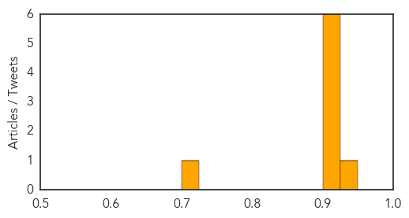
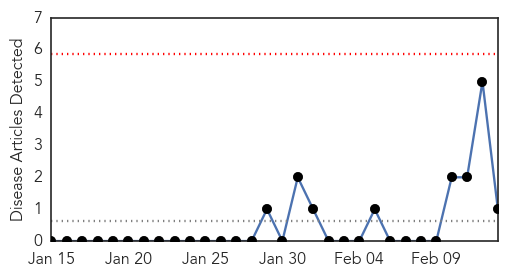
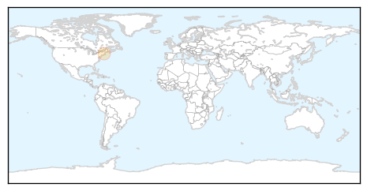

Hemmorhagic Fever
30-Day Web Trend
30 alerts, 0 warnings

30-Day Twitter Trend
0 alerts, 0 warnings

Article Locations

Article Confidences
Top Articles:
- 0.941
- Kenya : Warning over donkey, game meat
- 0.916
- Infectious disease outbreak prevention: US, other counties begin effort to fight and prevent outbreaks of infectious diseases
- 0.915
- US, 26 countries launch effort to fight outbreaks
- 0.915
- US, 26 countries launch effort to fight outbreaks
- 0.906
- US, 26 countries begin global effort to better fight infectious diseases before they spread
- 0.905
- The Voice of Russia: News, Breaking news, Politics, Economics, Business, Russia, International current events, Expert opinion, podcasts, Video
- 0.901
- US, 26 countries launch effort to fight outbreaks - MyNorthwest
- 0.703
- Why Global Health Security Is Imperative
Top Tweets:
-
No tweets found for Feb 13, 2014
West Nile Virus
30-Day Web Trend
0 alerts, 0 warnings

30-Day Twitter Trend
0 alerts, 0 warnings

Article Locations
Article Confidences

Top Articles:
Top Tweets:
-
No tweets found for Feb 13, 2014